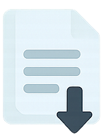

KANWIL KEMENTERIAN HUKUM RI
DAERAH ISTIMEWA YOGYAKARTA
DAERAH ISTIMEWA YOGYAKARTA
Perseroan Terbatas (PT) (bahasa Belanda: Naamloze Vennootschap) adalah suatu badan hukum untuk menjalankan usaha yang memiliki modal terdiri dari saham-saham, yang pemiliknya memiliki bagian sebanyak saham yang dimilikinya. Karena modalnya terdiri dari saham-saham yang dapat diperjualbelikan, perubahan kepemilikan perusahaan dapat dilakukan tanpa perlu membubarkan perusahaan.
Pembayaran Voucher PNBP
Form Pendirian Perseroan
Warga Negara Indonesia
Perorangan, Badan Hukum, Masyarakat, Negara Republik Indonesia, dan Pemerintah
Warga Negara Asing
Pemilik Manfaat, Notaris Pengganti, Dokumen yang harus diunggah, Unggah Akta dan Konfirmasi Permohonan, dan download SK Pengesahan Pendirian
| PNBP Modal Dasar Paling Banyak Rp 25.000.000 | Rp 300.000 |
| PNBP Modal Dasar Lebih Dari Rp 25.000.000 s/d Rp 1.000.000.000 | Rp 600.000 |
| PNBP Modal Dasar Lebih Dari Rp 1.000.000.000 | Rp 1.100.000 |
Untuk informasi lebih lanjut, kunjungi layanan AHU Online